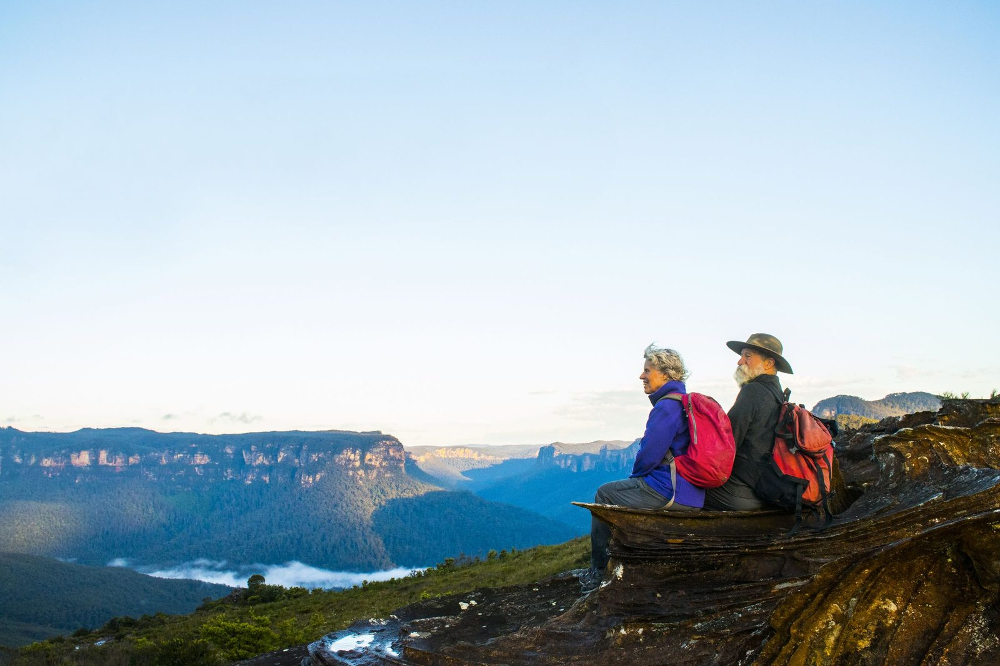
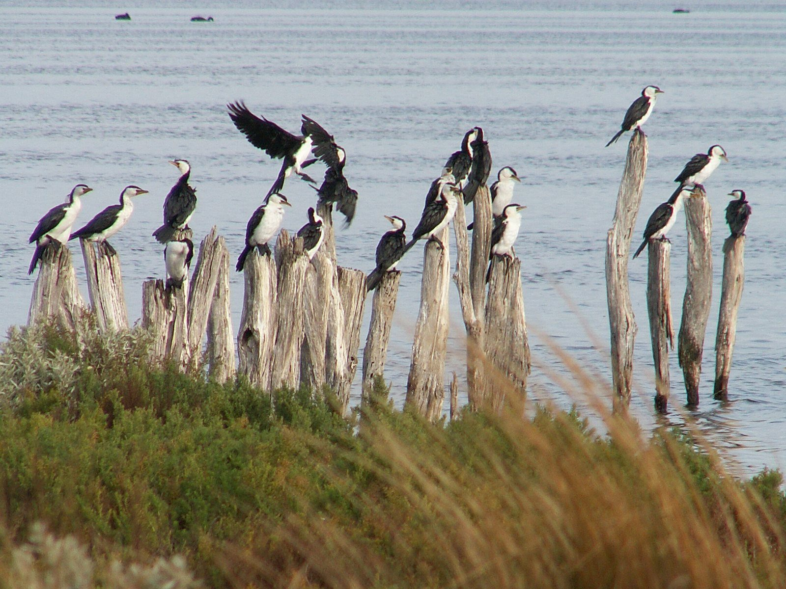

Leave a legacy.
A gift in your will keeps the nature you love living on for the generations who come after you. Whenever you are ready, we would love to talk with you about it.


Barbara Harris, and the island her gift helped save.
Some gifts change a single life. Barbara Harris left one that changed an entire landscape.
When Mundoo Island came onto the market after more than a century of farming, its 1,900 hectares of wetland, saltmarsh and coastal habitat at the Murray Mouth had a narrow window to be saved.
A transformative gift from the Estate of the Late Barbara Harris became the foundation of our contribution. Building on it, we worked with the Ngarrindjeri Aboriginal Corporation and the Australian and South Australian Governments to secure the whole island, and in 2026 it became part of Coorong National Park.
Mundoo is home to 65 nationally listed threatened species and is a refuge for migratory shorebirds on the East Asian-Australasian Flyway. For thousands of years it has held deep cultural meaning for the Ngarrindjeri people, whose connection to this Country continues to guide its care. Where the land was once grazed, restoration has already begun, rebuilding the island’s natural hydrology and healing its wetlands.
None of it would have happened without Barbara. One person, thinking of the future, can protect an entire island for every generation that follows.
Read the Mundoo Island story →Every gift starts with a conversation.
A gift in your will is one of the most personal decisions you will ever make. There is no pressure and no hurry, and whatever you decide, we would love to get to know you.
Ask us anything
Talk through your questions in confidence, by phone or email, with no obligation.
Call 1800 898 626Request information
We will send you information about leaving a gift in your will, including our suggested wording.
Request informationAlready included us?
If you have left us a gift in your will, please let us know so we can thank you and understand your wishes.
Let us knowSimpler than most people expect.
Most people add a gift when they write or update their will. It takes four steps, and you are free to change your mind at any time.
Talk it through with the people you love
A conversation with family or close friends brings clarity, and means your wishes are understood.
Choose the gift that feels right
Most people leave a share of what remains once their family is provided for. The options are set out below.
Ask your solicitor to add it to your will
Give them our suggested wording and details, and they will make sure your will says exactly what you intend.
Let us know, if you would like to
You are never obliged to tell us, but it lets us thank you and understand your wishes. Tell us here.
Residual gift
What remains of your estate once loved ones, debts and specific gifts are settled. It never takes from anyone else you have named.
Percentage gift
A share of your estate, so your gift stays in proportion with everything else you leave, whatever the final value.
Specific sum
A set amount that feels right to you. It is worth reviewing every few years, as inflation changes what it can do.
Shares or other assets
A specific asset such as shares or artwork. Land can’t be left in a will, but you can give land in your lifetime.
You can also give through a trust, which your adviser can help you arrange, or leave a gift for a specific purpose, such as acquiring land for a national park or protecting a particular species. Please talk to us first so we can make sure your wishes can be fulfilled.
Suggested wording for your will.
If you would like to include a gift to us, your solicitor may find the following wording helpful. Please confirm the details with us or with your solicitor before finalising.
A note on tax
For many people, a gift in their will is a tax-effective way to give, and as a registered charity with Deductible Gift Recipient status we are able to receive gifts of this kind. Everyone’s circumstances are different, so we always recommend talking it through with your solicitor or financial adviser.
If you are an executor
If you are managing an estate that includes a gift to us, please call 1800 898 626 or email fnpw@fnpw.org.au and we will help with whatever you need. There is more for executors in the section below.
Advising a client or managing an estate?
Our page for professionals brings everything together in one place: our legal details and suggested wording, how we handle gifts for a specific purpose, support for executors, and one direct contact for you and your clients.
Questions about gifts in wills.
Do I need to tell you if I leave a gift in my will?
Can I choose what my gift supports?
How will my gift be used?
Do I need a great deal of money to leave a gift?
Can I leave land to you in my will?
Can I change my mind later?
We are here whenever you are ready.
Whether you have already included us in your will, would like some information, or simply have a question, we would be glad to hear from you. Every conversation is confidential and carries no obligation.
Gifts in Wills enquiry
Ask a question, request information, or let us know you have included us in your will. We will come back to you personally.
The form is taking a while to load. Email fnpw@fnpw.org.au or call 1800 898 626 and we will take your enquiry directly.
Everything you share is kept confidential and handled in line with our privacy policy.